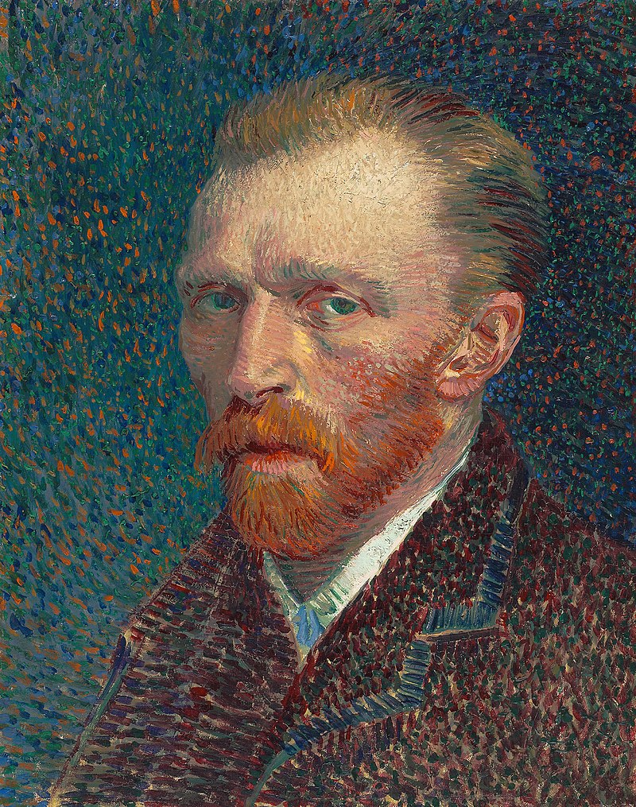

On July 27, 1890, at the age of 37, he died from a self-inflicted gunshot wound in the chest. Van Gogh had struggled with mental illness for much of his life, and his death is widely believed to have been a result of his struggles with depression, anxiety, and other mental health issues.

Despite his relatively short career as an artist, Van Gogh's legacy has endured and continues to inspire artists and art lovers around the world. His bold and vibrant style influenced
many later movements in art, including Fauvism and Expressionism.
Today, his paintings are among the most expensive and sought-after works of art in the world, with many of them housed in prestigious museums and private collections. Van Gogh's life and work have been the subject of numerous books, films, and exhibitions, and he remains one of the most celebrated and influential artists in history.
Today, his paintings are among the most expensive and sought-after works of art in the world, with many of them housed in prestigious museums and private collections. Van Gogh's life and work have been the subject of numerous books, films, and exhibitions, and he remains one of the most celebrated and influential artists in history.
self-portrait
1887
Art Institute of Chicago, USA